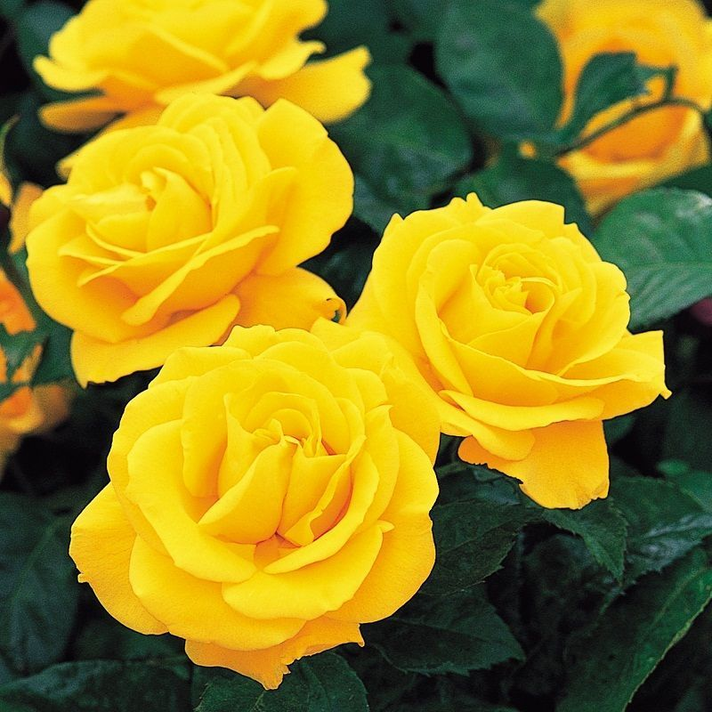
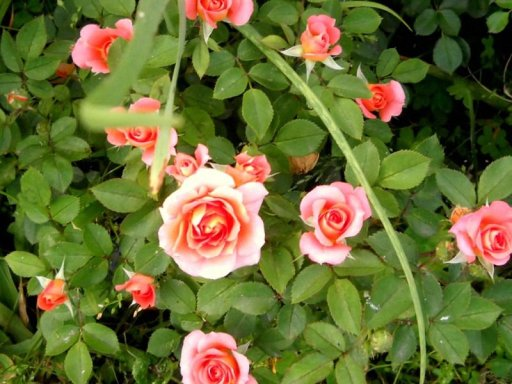

Todas las espermatofitas poseen flores que producirón semillas, pero la organización interna de la flor es muy diferente en los dos principales grupos de espermatofitas: las gimnospermas vivientes y las angiospermas. Las gimnospermas pueden poseer flores que se reúnen en estróbilos, o bien la misma flor puede ser un estróbilo de hojas fértiles. En cambio, una flor típica de angiosperma está compuesta por cuatro tipos de hojas estructural y fisiológicamente modificadas para producir y proteger los gametos. Tales hojas modificadas o antófilos son los sépalos, pétalos, estambres y carpelos. Además, en las angiospermas la flor da origen, tras la fertilización y por transformación de algunas de sus partes, a un fruto que contiene las semillas.
Los tipos de flores son:
Tipos de Rosas
| TIPO | CARACTERíSTICAS. | IMAGEN |
| Rosa Floribunda | Las flores se presentan en forma de racimos. Ademáss, se caracterizan por tener colores brillantes. Su floración es ligeramente más pequeña, pero lo compensa de otra manera: florecer de manera constante durante toda la temporada. | 
|
| Rosa Grandiflora | Son un híbrido entre la rosa de té y la floribunda. Por eso, combinan tener una floración constante con la delicadeza de rosas de tallos largos. Estas pueden crecer tanto en racimos como separadas. |
|
| Rosal mini | Con flores de pequeño tamaño, nunca alcanzan tamaños superiores a los 40 centímetros. Puede cultivarse tanto en macetas como en jardineras. | 
|